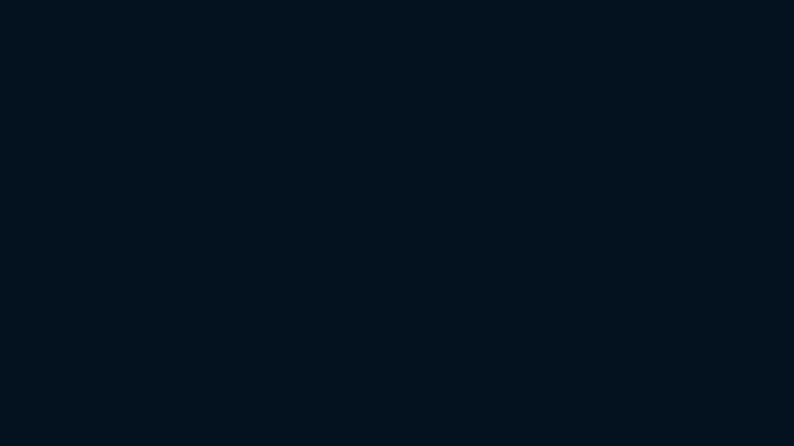

Ocean surfaces are cockpits, not duplicate brains.
This page documents the currently available Ocean OS client surfaces and their evidence state. It uses live checks where possible and marks missing captures honestly instead of pretending the whole ecosystem is already photographed.
What was live in this slice.
No daemon restarts. No surprise process kills. Only inspected/captured what was already running or already present as repo assets.
127.0.0.1:4780ok, backend openai-codex/gpt-5.5.127.0.0.1:8790target/release/ocean-rsassets/surfaces/cli-capture.txt.../ocean-surface: map, model dropdown/halt, collapsed tool group.assets/surfaces/longhouse-deck-live.png from the dedicated Longhouse slice after /v1/longhouse/demo.The browser/PWA face is running now.
Observed from http://127.0.0.1:8790 during this slice.
Visible controls
Project picker, model picker, sessions button, component gauntlet button, mute button, tool drawer, voice orb, text composer, and send button.
Live model catalogue
Surface showed DeepSeek V4 Pro/Flash, DeepSeek Reasoner/Chat, GPT-5.5/5.4, Claude Opus/Sonnet, MiniMax M2, and Kimi K2.6.
Voice readiness
/api/config reported has_auth: true and voice_profile: leo, so STT/TTS proxy config is present.
Sessions panel
The sessions overlay is available from the header, with “New Session” and resume-list mechanics.
Existing screenshots from the Surface repo.
These are actual repo assets copied into this documentation site. Next pass should replace/add fresh full-page captures.

Model dropdown + halt affordance from ../ocean-surface/model-dropdown-halt.png.

Collapsed tool group rendering from ../ocean-surface/tool-group-collapsed.png.

Map component render test from ../ocean-surface/map-render-test.png.
The living deck now has a real capture.
Captured in a later dedicated slice from the runnable deck, not fabricated during the initial surface inventory.

Live Longhouse deck capture from assets/surfaces/longhouse-deck-live.png.
What changed since the first inventory
The original surface inventory marked :8795 as queued because the deck was not running. A dedicated Longhouse pass later started the deck, triggered POST /v1/longhouse/demo, and captured the underwater-building coordination view.
See Longhouse coordination for the event model and deck architecture.
The command-line client talks to the same daemon.
Captured via target/release/ocean-rs during this slice.
$ ocean-rs health
ok ocean-daemon backend=openai-codex/gpt-5.5
$ ocean-rs sessions | head
{"ok":true,"sessions":[{"git_branch":"feat/longhouse-deck","id":"ec2fbd2a-bdb2-4ff8-aff6-98cf5736aba1","model":"gpt-5.5","title":"hey","turns":142,"workspace_root":"/Users/risingtidesdev/dev/ocean-surface"}, ...]}Every surface follows the same product boundary.
UI owns presentation and input. The daemon owns truth.
Thin client
Surface sends turns, renders SSE events, posts component interactions, and stores only selected client state like session id/project/model choice.
Shared event stream
Assistant text, thinking, tool calls, components, browser activity, and turn completion all arrive as structured events.
Surface-specific UX
Web renders HTML components, TUI renders terminal markdown/panels, CLI prints control output, extension docks beside Chrome.
Queued work for a complete Surfaces page.
ocean-tui in a controlled terminal and capture image/video.